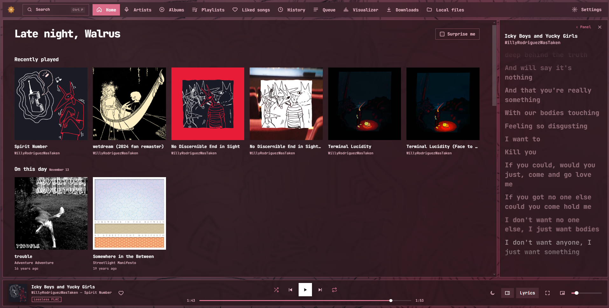

Lytanic.
lytanic is a local media player that supports plex, jellyfin, and local files.
this app was my attempt on making a half decent desktop music player that doesnt run like shit, cough cough PLEX WINDOWS APP

What it does
- connects to your plex server via plex token and ip
- pulls lyrics from lrclib.net or straight from your server. or both, idc
- gapless and lossless playback, with the file format shown on each track
- a fullscreen mode when you click the album cover
- artist pages with a photo, bio, top tracks, similar artists and releases
- a side panel for lyrics, up next and artist info
- features endless customization options
- Ly-Builder, which makes a 100 song playlist from artists you choose
- calm & useful home menu
- local files support
- a setup screen that walks you through getting your plex token or jellyfin credentials.
What it won't do
sadly, you cant rent a car with it or download more ram with it. I KNOW I WANTED IT TOO
Status
It's built with Electron and Node, ive built the app in windows. I'm still fixing bugs, mostly around playback & general UI Improvements. No public download yet.